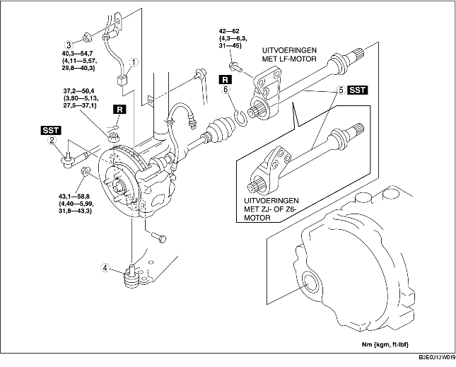

1. Tap de olie uit de transmissie af. (Zie VERVANGEN VERSNELLINGSBAKOLIE [F35M-R].) (Zie VERVERSEN AUTOMATISCHE-TRANSMISSIEVLOEISTOF.)
2. Verwijder de onderdelen in de aangegeven volgorde, zie de tabel.
3. Plaats de onderdelen in omgekeerde volgorde.

.
|
1
|
Stekker wielsensor
|
|
2
|
Spoorstangkogel
|
|
3
|
Bovenste moer verbindingsstang stabilisator
|
|
4
|
Onderste fuseekogel
|
|
5
|
Tussenas
|
|
6
|
Clip
|
1. Neem de rechter aandrijfas los van de tussenas door met een messing staaf en een hamer tegen de buitenring aan transmissiezijde te tikken.
2. Neem de assteun los van het cilinderblok en verwijder de tussenas.
3. Plaats SST op de transmissie als de tussenas verwijderd is.
1. Plaats de nieuwe clip van de tussenas met de opening naar boven in de groef aan het uiteinde van de tussenas en controleer of de diameter aan de specificatie voldoet.
2. Meet na het plaatsen de buitendiameter.